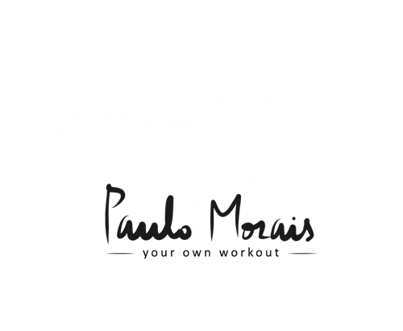

O que é o treino oncológico?
É exercício físico adaptado para pessoas a viver com cancro ou depois do tratamento do cancro. O plano considera a condição física, os objetivos e as recomendações da equipa de saúde.

Cada vez mais pessoas vivem muitos anos depois de um diagnóstico de cancro. Cinco passos ajudam a recuperar energia, a proteger a saúde e a voltar à vida com mais segurança. Do passo 0 ao passo 5, descobre-os um a um.
Descobriste 0 de 5 passosO treino oncológico de Paulo Morais é um acompanhamento de exercício físico adaptado depois do cancro. Há sessões presenciais em Lisboa e treino online, com um plano ajustado à condição física, aos objetivos e às recomendações da equipa de saúde.
Este acompanhamento é um serviço de exercício físico, não uma consulta de oncologia ou um tratamento do cancro. A avaliação de exercício considera a orientação clínica e as limitações relevantes antes de definir a progressão do treino.
O treino online está disponível em Portugal, na União Europeia e em países lusófonos, de língua inglesa e de língua espanhola. O guia seguinte ajuda a organizar os cuidados após o tratamento e a preparar a conversa com a equipa de saúde.
Para muitas pessoas, é aqui que começa outra fase depois do cancro: efeitos que ficam, emoções que pesam, dúvidas sobre o que fazer a seguir. Há 5 passos que fazem diferença.
Cada passo vive numa página diferente do site, com uma forma diferente de o descobrir. Toca num cartão para ires ao sítio onde ele te espera.
Um mapa do corpo com 6 pontos para tocar: fadiga, sensibilidade, sono, dor, memória e coração.
Ver em Osteopatia5 pedras para virar: humor, sono, medo, família e apoio.
Ver em Sobre MimUm escudo de 4 peças para fechar: as vacinas a confirmar com o teu médico.
Ver no BlogUm anel de 150 minutos para fechar com as tuas atividades da semana.
Ver no InícioUma pasta com 6 separadores para levar à consulta. Está mesmo aqui em baixo.
Ver aquiDepois do tratamento do cancro, muita gente sai da última consulta sem saber o que vem a seguir. Um plano de sobrevivência reúne, num só sítio, o que aconteceu, o que vigiar e o que fazer. Pede-o à tua equipa de oncologia, e usa esta pasta para saberes o que perguntar.
O que registar
Pergunta à tua equipa«Podem escrever-me um resumo do meu diagnóstico?»
O que registar
Pergunta à tua equipa«Que tratamentos fiz exatamente e como podem afetar-me mais tarde?»
O que registar
Pergunta à tua equipa«Que efeitos tardios devo esperar e quais são sinais de alerta?»
O que registar
Pergunta à tua equipa«Que exames faço, quando, e quem os marca?»
O que registar
Pergunta à tua equipa«Que vacinas e rastreios devo fazer agora?»
O que registar
Pergunta à tua equipa«Há alguma restrição ao exercício no meu caso?»
É uma folha em branco para preencheres à mão com a tua equipa. Não guardamos nem enviamos nada. Os planos de sobrevivência ajudam a comunicação entre oncologistas, médicos de família e doentes, mas só funcionam se forem usados de forma consistente.
O que precisas de saber sobre o treino oncológico com Paulo Morais, em Lisboa e online.
É exercício físico adaptado para pessoas a viver com cancro ou depois do tratamento do cancro. O plano considera a condição física, os objetivos e as recomendações da equipa de saúde.
Presencialmente em Lisboa ou através de treino online, em Portugal, na União Europeia e em países lusófonos, de língua inglesa e de língua espanhola.
Não. É um serviço de exercício físico, não uma consulta de oncologia nem um tratamento do cancro. O treino oncológico é uma das áreas de Paulo Morais, a par do treino personalizado, do treino em grupo, do treino online e da osteopatia.
A participação pode exigir autorização ou coordenação com a tua equipa de saúde. A avaliação de exercício considera a orientação clínica e as limitações relevantes antes de definir a progressão do treino.
O exercício adaptado pode acompanhar diferentes fases, durante ou depois do tratamento, sempre de acordo com as orientações da equipa de saúde.
Não. O guia é informação geral para organizar os cuidados depois do cancro e preparar a conversa com a equipa de saúde. Não é um plano de tratamento personalizado.
As sessões decorrem em português e inglês. Pedidos em espanhol, incluindo de países hispanófonos, são confirmados no contacto.
Podes agendar uma avaliação de exercício após o cancro na área de cliente, ou falar com o Paulo por WhatsApp ou telefone (+351 960 471 537) ou por email (pt@pmorais.pt).
Informação geral, baseada nas fontes acima; não é aconselhamento médico e não substitui a tua equipa de oncologia. O Paulo Morais adapta o exercício a cada pessoa; não trata o cancro nem receita vacinas ou medicação.
Numa avaliação, o Paulo ouve a tua história, percebe o que a tua equipa de saúde recomenda e adapta o exercício a ti, depois do cancro.